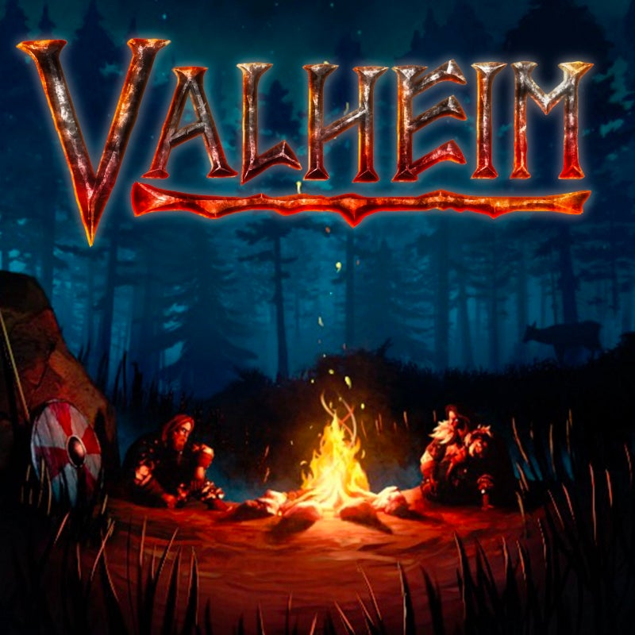

Valheim
Genres: Sandbox
Website
Developer: Iron Gate AB
Publisher: Coffee Stain Publishing
Platforms: PC, Xbox Series X, Xbox One, PlayStation 5, Nintendo Switch 2
Released: 2026, September 9
Rated: Not Rated
Welcome to Valheim! The valkyries have ferried your soul to the tenth norse world as a custodian, where you must adventure to the ends of the realm, from the deepest forest to the highest mountain peak, slaying beasts of myth and legend feared by Odin himself. You will craft powerful weapons, build unyielding castles and sail longships towards the horizon to prove yourself to the Allfather, and certainly die trying! A battle-slain warrior, the Valkyries have ferried your soul to Valheim, the tenth Norse world. Besieged by creatures of chaos and ancient enemies of the gods, you are the newest custodian of the primordial purgatory, tasked with slaying Odin’s ancient rivals and bringing order to Valheim.